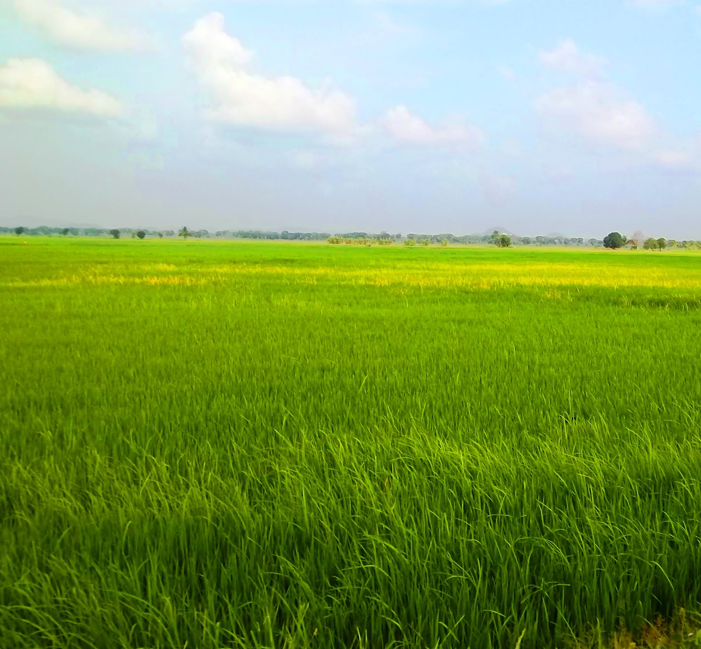
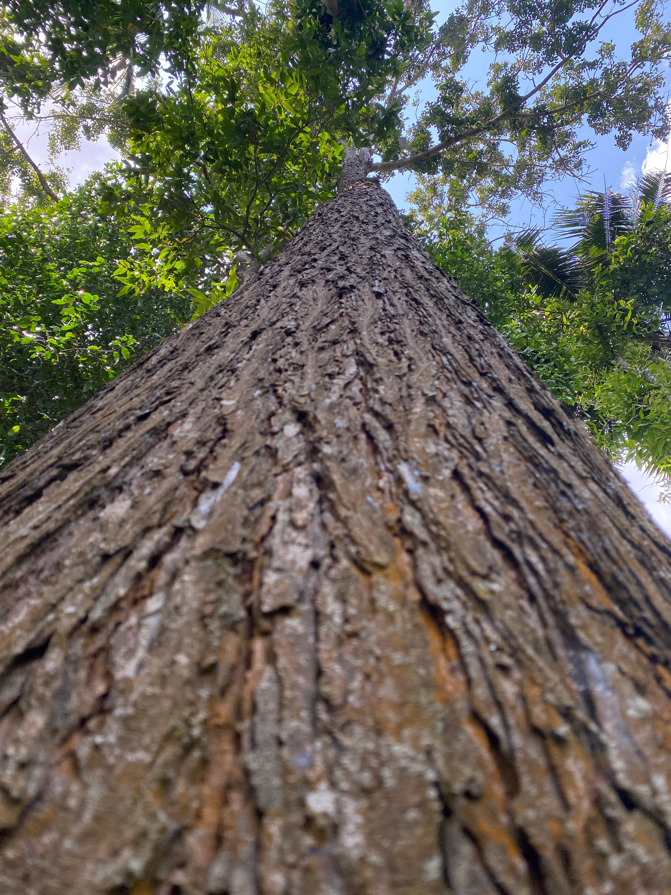

Tentang Padukuhan Kami

Mayoritas Petani
Warga Tegalsempu mayoritas bekerja sebagai petani, menjaga ketahanan pangan dan kelestarian lingkungan.

Gotong Royong
Semangat kebersamaan dan gotong royong menjadi identitas utama masyarakat Tegalsempu.

Harmoni Alam
Desa yang gemah ripah lohjinawi dengan keindahan alam dan suasana harmonis antarwarga.